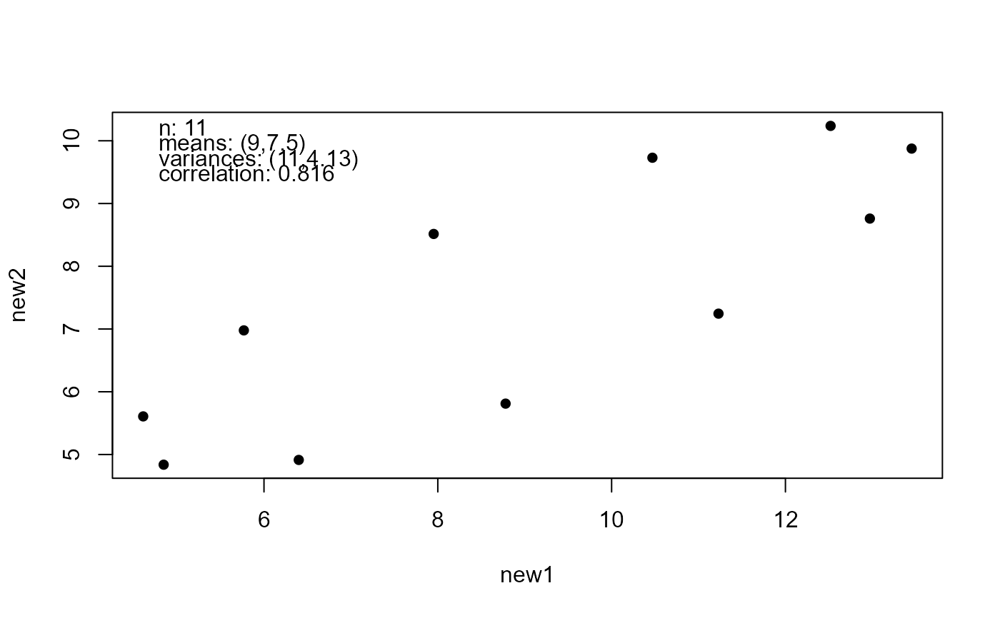
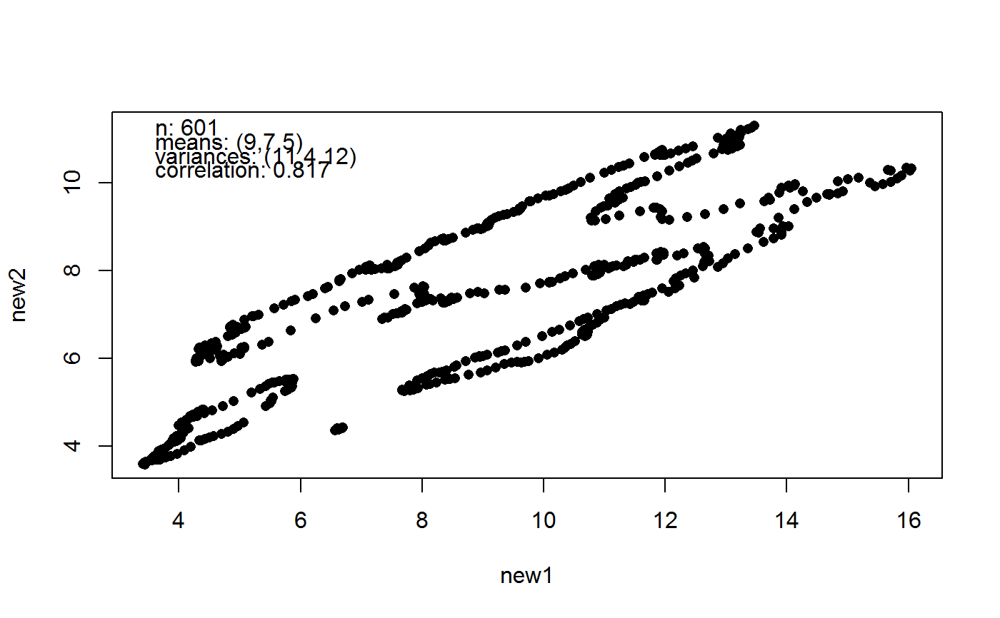
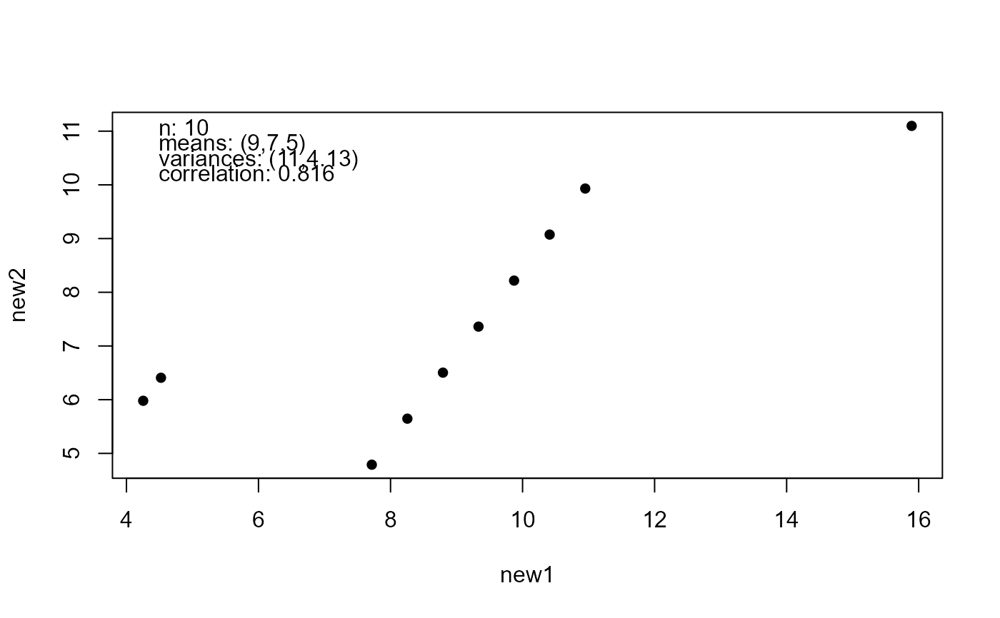
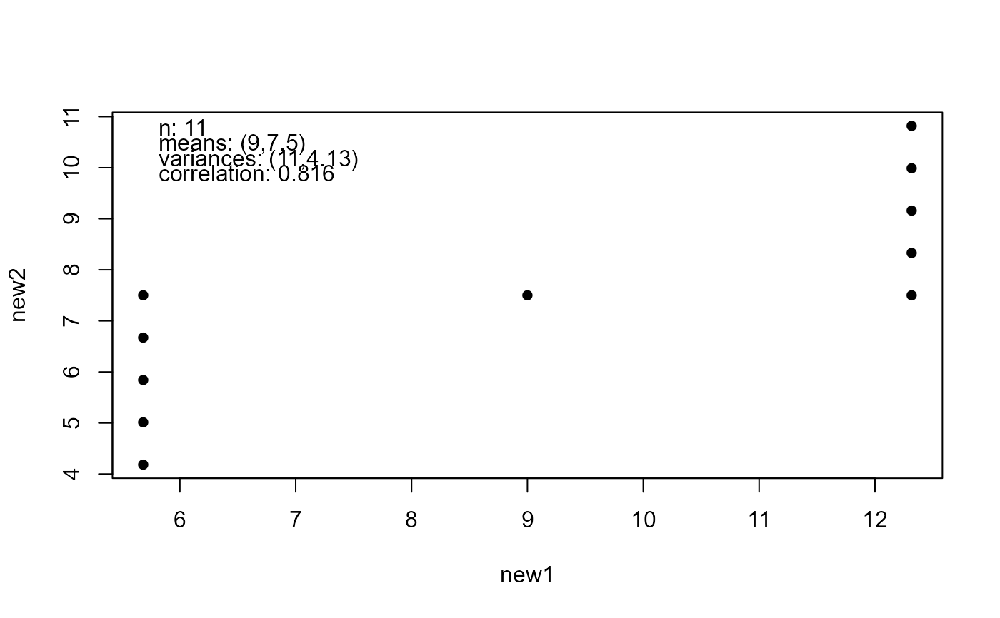
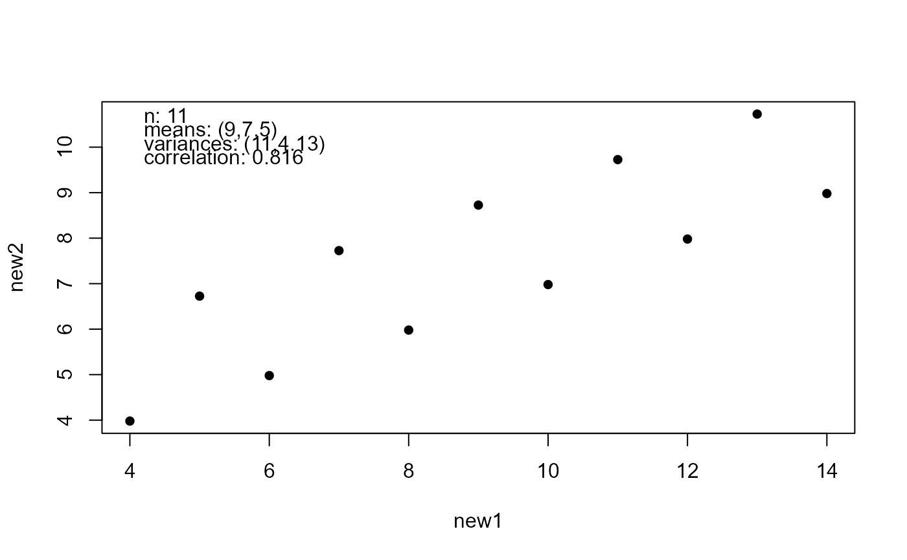
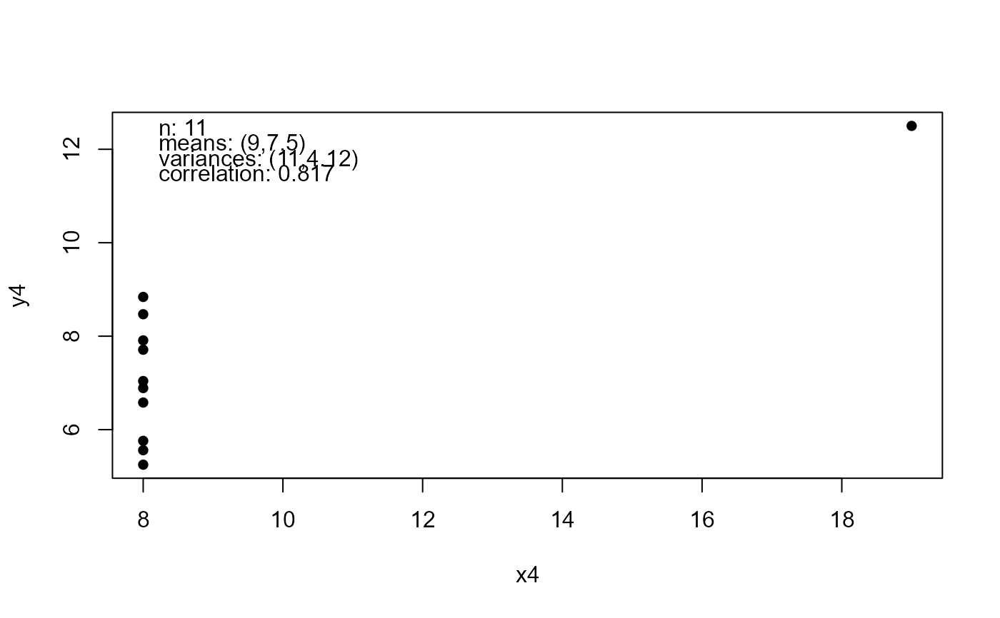
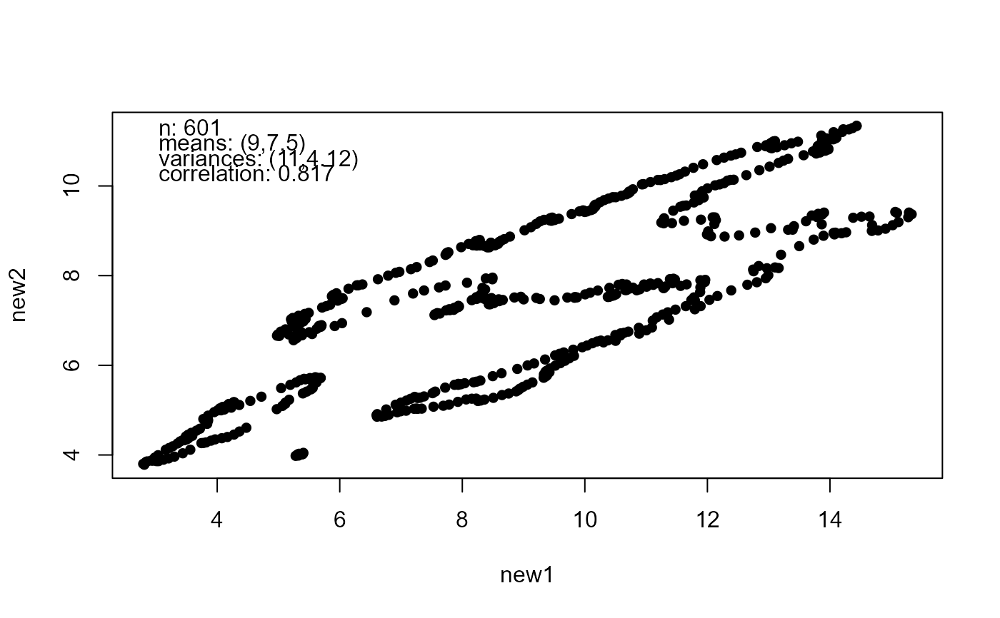

Modifies a dataset x so that it shares sample summary statistics with
Anscombe's quartet.
Arguments
- x
A numeric matrix or data frame. Each column contains observations on a different variable. Missing observations are not allowed.
- which
An integer in {1, 2, 3, 4}. Which of Anscombe's datasets to use as the target dataset. Obviously, this makes very little difference.
- idempotent
A logical scalar. If
idempotent = TRUEthen applyinganscombiseto one of the datasets in Anscombe's Quartet will return the dataset unchanged, apart from a change ofclass. Ifidempotent = FALSEthen the returned dataset will be a rotated version of the original dataset, with the same summary statistics. See Details.
Value
An object of class c("anscombe", "matrix", "array") with
plot and print methods. This returned
dataset has the following summary statistics in common with Anscombe's
quartet.
The sample means of each variable.
The sample variances of each variable.
The sample correlation matrix.
The estimated regression coefficients from least squares linear regressions of each variable on each other variable.
The target and new summary statistics are returned as attributes
old_stats and new_stats and the chosen Anscombe's quartet dataset as
an attribute old_data.
Details
The input dataset x is modified by shifting, scaling and rotating
it so that its sample mean and covariance matrix match those of the
Anscombe quartet.
The rotation is based on the square root of the sample correlation matrix.
If idempotent = FALSE then this square root is based on the Cholesky
decomposition this matrix, using chol. If idempotent = TRUE the
square root is based on the spectral decomposition of this matrix, using
the output from eigen. This is a minimal rotation square root,
which means that if the input data x already have the
exactly/approximately the required summary statistics then the returned
dataset is exactly/approximately the same as the target dataset.
See also
mimic to modify a dataset to share sample summary statistics
with another dataset.
datasets::anscombe for Anscombe's Quartet and anscombe for
Anscombe's Quartet as 4 separate datasets.
input_datasets: input1 to input8 for some input datasest
of the same size as those in Anscombe's quartet.
Examples
# Produce Anscombe-like datasets using input1 to input8
a1 <- anscombise(input1, idempotent = FALSE)
plot(a1)
a2 <- anscombise(input2)
plot(a2)

a3 <- anscombise(input3, idempotent = FALSE)
plot(a3)

a4 <- anscombise(input4, idempotent = FALSE)
plot(a4)
a5 <- anscombise(input5, idempotent = FALSE)
plot(a5)
a6 <- anscombise(input6)
plot(a6)

a7 <- anscombise(input7, idempotent = FALSE)
plot(a7)

a8 <- anscombise(input8, idempotent = FALSE)
plot(a8)

# Old faithful to new faithful
new_faithful <- anscombise(datasets::faithful, which = 4)
plot(new_faithful)
# Then check that the sample summary statistics are the same
plot(new_faithful, input = TRUE)

# Map of Italy
got_maps <- requireNamespace("maps", quietly = TRUE)
if (got_maps) {
italy <- mapdata("Italy")
new_italy <- anscombise(italy, which = 4)
plot(new_italy)
}
